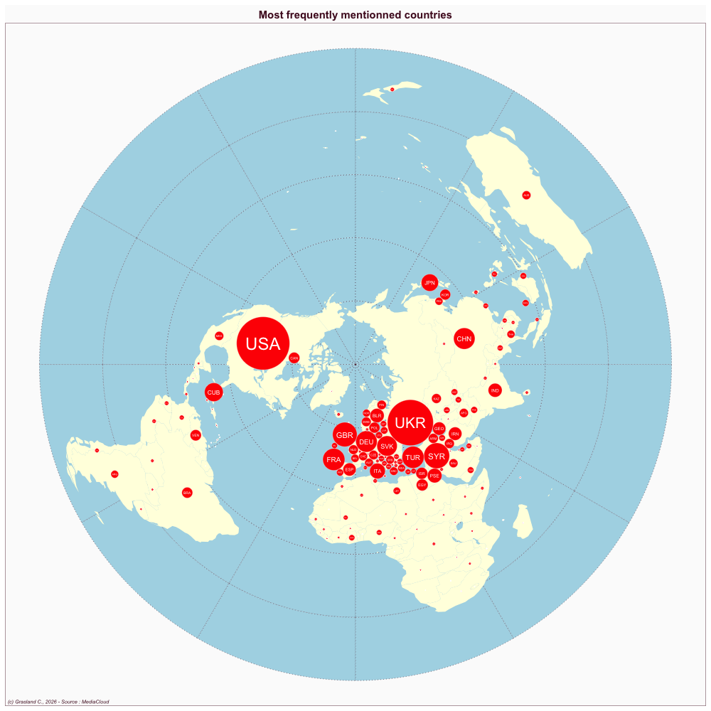

Russia
- Website : Isvestia
Scale
- Global
- National
Topics
- General news
- Political news
- Economic news
Publications
Koleva K. 2016. Comrades to the rescue: Czechoslovakia in 1968 and ukraine in 2014 through the lens of izvestia. In Media in ProcessRoutledge; 76–98.